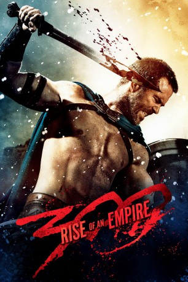
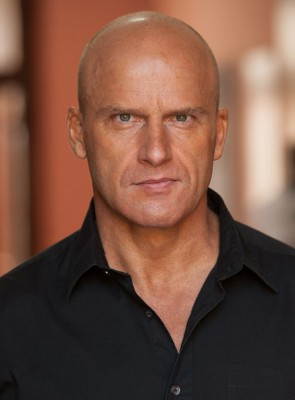
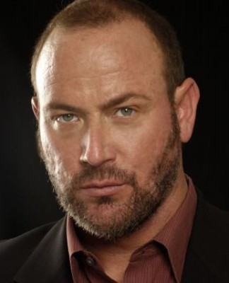
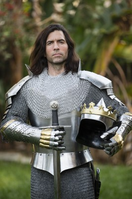
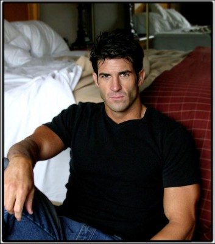

#283 300: Rise of an Empire
 
 IMDB-Wertung: 6.2 / 10
IMDB-Wertung: 6.2 / 10  Metascore: 48
Metascore: 48 
300: Rise Of An Empire handelt der Seeschlacht von Artemisium, die im August 480 v. Chr. zeitgleich zur berühmten Schlacht bei den Thermopylen stattfand, die das Zentrum von Zack Synders 300 bildete. Leonidas und seine Spartaner werden bei 300: Rise Of An Empire nicht zu sehen sein, dafür wird der Persekönig Xerxes zeigen, wie aus ihm der Götterkönig wurde, der später auf Leonidas trifft. Gegen ihn und sein Persisches Heer kämpft Themistokles, der mit einer zahlenmäßig weit unterlegenen griechischen Flotte eine Armada von 1200 persischen Schiffen aufhalten muss. Diese steht unter dem Kommando seiner Admiralin Artimisia. Vor der Griechischen Küste kommt es schließlich zur Entscheidung, die den weiteren Verlauf der persischen Invasion im antiken Griechenland vorbestimmen sollte.
Jahr: 2014
Dauer: 102 Minuten
FSK: 18
Land: USA Studio: Warner Bros.Tonspuren: DTS - ,
Untertitel: Deutsch, Englisch,
Auflösung: 1080p (1920×800) Größe: 12288 MB
Genre: Action, Fantasy, Krieg
Regisseur: Noam Murro
Drehbuch: Zack Snyder, Kurt Johnstad, Frank Miller
Soundtrack: Junkie XL
Darsteller:
 Sullivan Stapleton als Themistokles
Sullivan Stapleton als Themistokles Eva Green als Artemisia
Eva Green als Artemisia Lena Headey als Queen Gorgo
Lena Headey als Queen Gorgo Hans Matheson als Aeskylos
Hans Matheson als Aeskylos Callan Mulvey als Scyllias
Callan Mulvey als Scyllias David Wenham als Dilios
David Wenham als Dilios Rodrigo Santoro als Xerxes
Rodrigo Santoro als Xerxes Jack O'Connell als Calisto
Jack O'Connell als Calisto Andrew Tiernan als Ephialtes
Andrew Tiernan als Ephialtes Igal Naor als King Darius
Igal Naor als King Darius-  Andrew Pleavin als Daxos
 Peter Mensah als Persian Emissary
Peter Mensah als Persian Emissary Ashraf Barhom als General Bandari
Ashraf Barhom als General Bandari Christopher Sciueref als General Kashani
Christopher Sciueref als General Kashani Steven Cree als Decapitated Greek marine
Steven Cree als Decapitated Greek marine Caitlin Carmichael als 8 Year Old Artemisia
Caitlin Carmichael als 8 Year Old Artemisia- Jade Chynoweth als 13 Year Old Artemisia
-  Kevin Fry als Lascivious Greek
 David Sterne als Old Statesman
David Sterne als Old Statesman- Christopher Boyer als Senator
- Fred Ochs als Senator
 Price Carson als Senator
Price Carson als Senator- John Michael Herndon als Senator
- David Pevsner als Senator
 Peter Ferdinando als Greek Ambassador
Peter Ferdinando als Greek Ambassador Gregor Truter als Small Ambassador
Gregor Truter als Small Ambassador- Vincent Walsh als Naval Commander
- Nick Court als Theban Commander
 Mark Killeen als Greek Commander
Mark Killeen als Greek Commander- Luke Roberts als Butcher
 George Georgiou als Greek Citizen
George Georgiou als Greek Citizen- Farshad Farahat als Persian Officer
-  Scott Burn als Spartan Warrior , uncredited
- Wayne Dalglish als Young Spartan , uncredited
- Max Decker als Daius , uncredited
- Nick Granado als Priest , uncredited
-  Jeffrey James Lippold als Greek Shipwright , uncredited
 Christopher Maleki als Reza , uncredited
Christopher Maleki als Reza , uncredited- Nancy McCrumb als Athenian Woman , uncredited
 Velizar Peev als Spartan Warrior , uncredited
Velizar Peev als Spartan Warrior , uncredited- Anton Poriazov als Themistokles Oarsman , uncredited
- Bo Roberts als Spartan Warrior , uncredited
- Gregory Shelby als Spartan Warrior , uncredited
- Jaswant Dev Shrestha als Armenian Advisor , uncredited
- Nicholas Guy Smith als Senator , uncredited
 Joe Sobalo Jr. als Spartan Warrior , uncredited
Joe Sobalo Jr. als Spartan Warrior , uncredited Julian Stone als Voice Actor , uncredited
Julian Stone als Voice Actor , uncredited- Gary Terranova als Spartan Warrior , uncredited
- Marc Trottier als Spartan Warrior , uncredited
- Mark Aaron Wagner als Artemesia's Father , uncredited
Datei: X:\Comic-Filme\300\300 Rise of an Empire (2014, FSK18, 1920x800).mkv seit 16.02.2015
Festplatte: Comicverfilmungen+MusikCD
 Alle Filme aus Gruppe 'Comic-Filme\300'
Alle Filme aus Gruppe 'Comic-Filme\300'